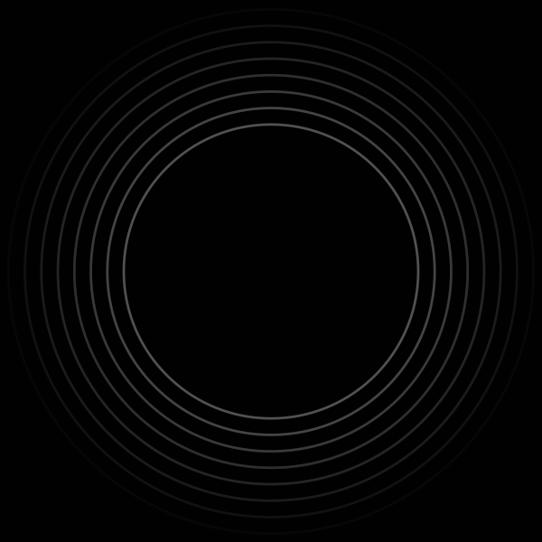
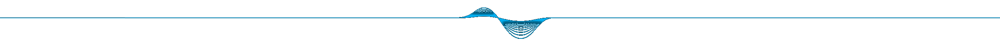

A pictorial exploration of the
Earth's surface beneath the waves.
A collection of images of the seabed as
viewed using sound waves. Acoustic techniques, most significantly
multibeam echosounders, have revolutionised our knowledge
of the shape and structure of the seabed.